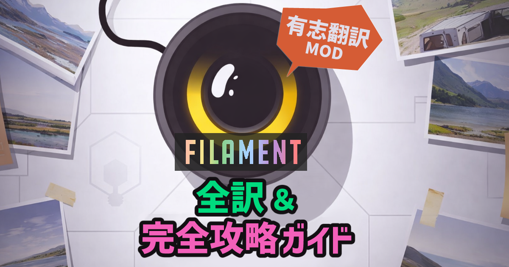
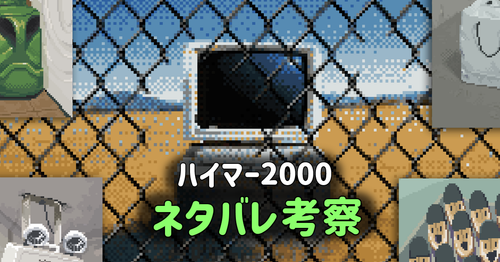

🎮【FILAMENT】全訳 ＆ 完全攻略ガイド
難解パズル『Filament』の真実を追え！ 言葉にかかる二重三重の意味、《糸 フィラメント》に絡めとられた行間を解きほぐす。ギリシャ神話のアリアドネ、置き去りにされた色彩豊かな地球の記憶。ディストピアの果てに彼女の「救い」はあったのか？

難解パズル『Filament』の真実を追え！ 言葉にかかる二重三重の意味、《糸 フィラメント》に絡めとられた行間を解きほぐす。ギリシャ神話のアリアドネ、置き去りにされた色彩豊かな地球の記憶。ディストピアの果てに彼女の「救い」はあったのか？

運命に抗え。 子供たちとハイマーにかかる呪い。ゲームならではの解き方とは？ フランクの正体と新生の意味とは？ カズオ・イシグロ『わたしを離さないで』との違い、「エルゴード文学」などなど。読めば自分の感想をもっと大事にしたくなる！